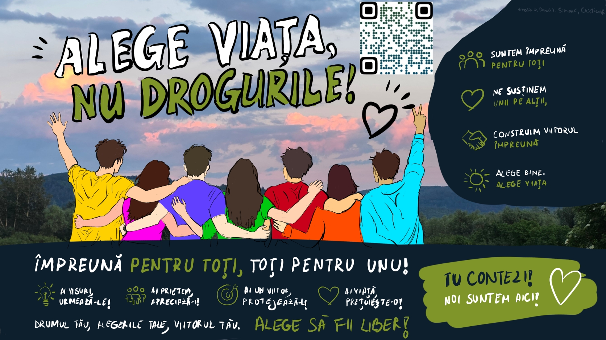

/// VIAȚA ARE PRIORITATE /// O SINGURĂ DOZĂ POATE SCHIMBA TOT /// SPUNE NU AZI, MÂINE POATE FI PREA TÂRZIU /// LINIA VERDE ANTIDROG 08008 700 700 /// NU EȘTI SINGUR /// VORBEȘTE CU CINEVA ///
Viața are Prioritate Spune NU!
La început le controlezi tu, apoi te controlează ele.

Ce se întâmplă de fapt
„Mă opresc oricând vreau.” — fraza pe care o spune fiecare început de dependență.
Consumul de substanțe psihoactive este una dintre cele mai mari provocări ale tinerei generații. Dependența nu alege pe nimeni, iar de cele mai multe ori debutează sub forma unei simple curiozități, a unei provocări sau a unei seri „doar o dată”.
01Mitul controluluiOrice consumator debutează sigur că se poate opri. Mecanismele neurochimice se instalează însă extrem de rapid.
02Corpul plăteșteInimă, ficat, plămâni, somn, memorie. Drogurile nu fac excepții și nu negociază.
03Mintea plăteșteAnxietate, depresie, paranoia, pierderea motivației. Școala și visele rămân pe locul doi.
04Legea nu glumeșteDeținerea pentru consum propriu este pedepsită. Un dosar penal te urmărește ani întregi.
Mit vs. Adevăr
„E doar iarbă, nu e drog adevărat.”
Canabisul poate crea dependență psihică și afectează memoria și atenția.
„Etnobotanicele sunt legale și sigure.”
Sunt adesea mai periculoase: compoziția e necunoscută, iar efectele imprevizibile.
„O singură dată nu strică.”
Nu poți ști cum reacționează corpul tău. Prima doză poate fi și ultima.
„Mă las singur când vreau.”
Recuperarea are nevoie de medici, psihologi și sprijin. Nu e o chestiune de voință.
„Toți o fac, deci e normal.”
Majoritatea tinerilor NU consumă. Presiunea grupului exagerează realitatea.
Cum refuzi, pas cu pas
1Spune scurt NUFără explicații lungi. „Nu, mersi” e o propoziție completă.
2Schimbă subiectulPropune altceva: o glumă, o plimbare, un joc.
3PleacăDacă insistă, pleacă. Un prieten adevărat nu te presează.
4Cere ajutorUn părinte, un profesor, un consilier. Nu ești singur.
Ai nevoie să vorbești? Apelul este gratuit.
08008 700 700
Linia Verde Antidrog · în caz de urgență: 112
Echipa de proiect
Amalia B.Coordonator Proiect & Dezvoltator site & grafică banner
Simion C.Dezvoltare Conținut & Analiză
Cristian R.Design Grafic & Materiale Vizuale
David V.Design Grafic & Materiale Vizuale
0 / 25
Chestionar (25 întrebări)
Spune NU astăzi, pentru a putea spune DA viitorului mâine.
Nu există răspunsuri greșite. La fiecare întrebare poți alege o variantă, poți scrie liber ce gândești, sau ambele.